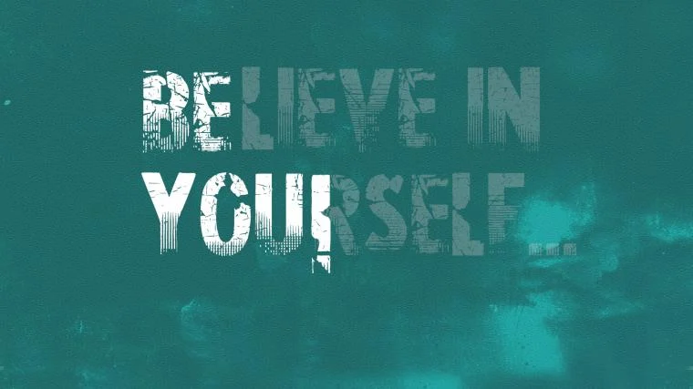
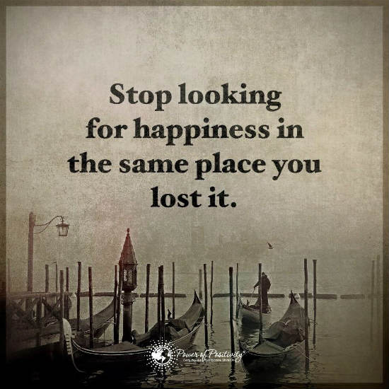

HOW TO BE SUCCESSFUL? (LET'S OBSERVE AND THINK)
So, you want to finally discover how to be successful?
First, imagine where you’ll honestly be in the next five years.
Maybe on a beach, working remote while drinking your favorite cocktail or beer. Or maybe you’ll be sitting
on a couch, watching Netflix, and still dreaming.Your success lies in your hands.I could tell you all the things you need to do to be successful, and at first you’ll probably do a couple of
those things, but six months from now you’ll be back to your current routine. So, do you want to finally figure out how to be successful and do it. Or do you want to keep dreaming about
it?
If you’re serious about becoming successful, keep reading.
Want to start your path to to success with your own business? Find cool products to sell on Handshake, your
wholesale one-stop shop.
What is Success in Life?
Success in life is whatever you define it to be. Maybe for you, you want to determine how to be successful to
achieve financial freedom or a flexible work schedule.
Some may want to travel the world while others just want to pursue what they’re passionate about.
Being successful isn’t necessarily about being rich or winning awards, it can be also about personal
fulfillment.
If you had to design your perfect day, what would it look like?
Would you be sitting on a bench next to a lake writing your memoir? Do you imagine yourself climbing Mount
Kilimanjaro and taking that big, deep breath once you get to the top?
Or maybe you just want to spend an entire day playing with your kids?
Why you want to learn how to be successful in life will be personal to you. Your partner, parents, and
friends may have their own definition of success.
But their definitions aren’t for you.
Whatever it is that’ll make you feel fulfilled and happy is what you need to focus on
while mastering the art of becoming a success.
Importance of Success
Most people obsess over how to be successful because we all want to feel like we matter.
Without achieving any success, we might look back on our life disappointed by our lack of impact on the
world.
Striving to achieve a greater purpose is what keeps us fighting to survive and grow.
While you might not become an international success, your life can still have an impact on others.
The goal of achieving success will help you live a more purposeful life by pushing you to overcome
obstacles,
work a bit harder and pursue happiness.
How Can I Become Successful?

Truth is, you’ll probably never become successful.
I’m not saying this to be a jerk, I’m saying it because the odds are stacked against you.
On the bright side, it’s never been easier to learn how to be successful.
There’s never been more millionaires in the world than there are today.
Also, I’m kind of hoping that by telling you you’ll never be successful that
you’ll think to yourself, ‘Man, this Nicole girl is kind of a jerk.
I want to prove her wrong just so I can leave a nasty comment telling her a
few months from now that she was SO wrong about me.’
Do it. Prove me wrong!
In my career, I’ve found having a chip on my shoulder and being angry at the world
has resulted in me growing at a faster rate than everyone else.
I like to pretend that I’m the biggest failure in the world with everything to prove.
If someone doubts me, I do whatever it takes to prove them wrong.
Like I always say, ‘Don’t piss me off, because when I’m angry I’ll always win.’
But truth is, I secretly love it when people diss me.
What Does It Take To Be Successful?
Nothing will motivate you better than a fuming rage deep inside you.
So, here’s your diss: You spend way too much time on unimportant tasks while pretending that you’re
‘researching or learning or finding motivation.’ But truth is, you’re slacking. And you’re never going
to get your act together unless you START WORKING. So, if you want to be able to pay your bills or travel
the world, it’s not going to happen if you never take that first step.
How to Be Successful in Life – 8 Ways to Be Successful in Life
#1. Stop Looking for the Silver Bullet
The silver bullet is that you need to put in the work everyday for years.
It’s not some Facebook ads hack. Or some magical $2000 conference.
But no matter how many times people tell you that, you’re still going to dig around for the secret answer.
Why?
Because you don’t want to put in the work.
You want to be an overnight success.
Not gonna happen, though.
So if I were you, I’d start creating.
#2. Start Creating Better Goals
‘My goal is to make a ton of money.’
And you’re wondering why you still haven’t made it.
Your goal isn’t actionable.
And quite frankly it isn’t that motivating either.
Money is great and all but it won’t leave you fulfilled.
What’s your big life purpose?
Maybe being successful to you means taking action to clean the world’s oceans or to help prevent animals
from becoming extinct.
Now, how do you do that?
Well, you need money, and that’s where your money goal comes into play.
How much money do you need to help solve those problems.
Get a calculator, reach out to some nonprofits and start crunching numbers.
Then, use that exact number as your goal.
And add an exact date to it.
‘I want to make $103,476.37 by December 31st, 2021 to invest
in cleaning the world’s oceans so we can preserve ocean life and have clean drinking water.’
Now you’ve got a specific goal, a date to achieve it by and a purpose for achieving it.
#3. Stop Looking for Validation
If you’re looking for ways to be successful in life, you’re not going to find it in the people around you.
Unless, everyone around you is a giant success.
Your mom, dad, best friend, partner, and dog don’t need to approve your business ideas.
Live life your way. Stop looking to others for validation that you’re on the right track.
Wanna know how you’re on the right track?
When you ask yourself, ‘Am I living the life I want?’
If the answer is yes, you’re on the right track.
If the answer is no, you’ve got some changes to make.
People always think they know what’s best for you.
But only you’d know what that is.
Trust yourself a bit more and you’ll realize you know what you’re doing.
#4. Start Living Your Dreams
Being successful in life isn’t about a magical moment when everything falls into place.
It’s about the little moments in between.
Moments where you’re happy. Moments that you’re really soaking in.
Truth is, you can experience those moments even if you’re currently stuck in a 9 to 5.
If your goal is to run an online business, you’ve got evenings and weekends where you can start plugging
away.
Maybe you want to be a digital nomad, you can talk to your boss about working remote for three weeks while
you work abroad.
I know what you’re thinking, you want it all and you want it now.
But truth is, unless you take those baby steps, you won’t really know whether it’s something you want or
something you think you want.
You can still start trying to figure out a plan on how to be successful whether you’re at a 9 to 5 or not.
I’m not saying stay at your 9 to 5 if you’re miserable. I’m just saying that the 9 to 5 on its own isn’t
always the only cause of your frustration or unhappiness.
#5. Stop Looking for a Mentor
There’s nothing wrong with mentorship. It can actually be really great for building your career.
Most people don’t want mentorship though, they want someone to do all the work for them.
Entrepreneurship and being successful is all about taking ownership.
You talk a big game about wanting freedom, but when it comes to designing your first store, you ask for so
much feedback.
But what you need to realize is that the best thing about entrepreneurship is that you can create your
business any way you want.
And if you get a mentor to help you make decisions it’s basically like having a boss oversee your work – you
start to lose that freedom that you really wanted.
If you constantly have people guiding you on your journey, your wins aren’t really your wins and your losses
aren’t really your losses.
If you don’t take ownership of your wins and losses, you never really get that ‘OMG! I DID IT!’ feeling.
And you also never learn from your mistakes because they weren’t your mistakes in the first place.
You’re going to make bad decisions but you’ll make some great ones too.
You don’t need a mentor to teach you how to be successful, especially if your goal is to live life on your
own terms.
#6. Start Building Your Expertise
You don’t have to be the best on day one.
But you can start building up to it.
If you consistently take the time every day to invest in your growth, you’ll be amazed by your growth a year
from now.
If you’re running online stores, take the time to learn and test out different marketing hacks.
By sticking it out for a year, you’ll likely see that you’ve been building up your sales.
If you’re a writer, write every day for a year.
By trying out different writing styles and pumping out consistent content, you’ll likely realize that you’ve
started to amass a loyal following.
Building your expertise requires effort.
And your expertise will help you find your answer to the question of how to be successful.
#7. Stop Blocking Yourself
Roadblocks, bad days, failures, procrastination: what do they have in common?
They’re all in your head.
I’m so used to roadblocks that my instant reaction is always to find the workaround.
I’ve done some weird stuff just to jump over obstacles.
Yesterday I had a bad day and then halfway through the day, I realized I just had a bad sleep the night
before and I just started laughing. Why? Because I realized that the solution to my problem was easy. All I
needed to do is go to bed earlier that night. Next day? It was like the bad day never happened.
Your success can never be blocked by an external force.
There’s always a workaround solution.
And that solution almost always comes from removing a mental barrier in your head.
If you need to change anything about yourself, change your perspective.
#8. Start Doing
You can’t achieve success if you haven’t done anything.
There’s no big financial reward just for showing up.
You need to put in the time and energy into building something.
After all, the most successful people are all creators.
Mark Zuckerberg created Facebook. Jeff Bezos created Amazon. Sara Blakely created Spanx.
And if you devote your life to being a creator, you could eventually start to see what it takes to be
successful.
But it does take time and consistent effort.
I know it’s easier to just put on Netflix and turn off your brain after a work day, but the results you want
to see come from keeping your brain turned on after hours. By outworking those around you.
Conclusion
Being successful comes down to you.
I could list a million more tricks about how to be successful in life but if you’re not willing to do the
work, it won’t pay off.
You’ve finished reading this article and so now you have two options.
Option A: You start building something: a store, a blog, an app, (fill in the blanks).
Option B: You admit to yourself that you don’t really want to succeed, you only like the idea of it. And you
go marathon a show on Netflix for the rest of the day.
I hope for your sake you go with Option A. I mean you’ve just read an article about how to be successful,
I’m pretty sure you were serious about achieving success before reading it.
But if you choose Option B, I hope that you take the time to find fulfillment and happiness in whatever you
do. And I hope years from now, you’re smiling knowing that you have no regrets.
What Are The 5 Keys To Success?
#1. Stop Looking for the Silver Bullet
#2. Start Creating Better Goals
#3. Start Building Your Expertise
#4. Stop Blocking Yourself
#5. Start Doing